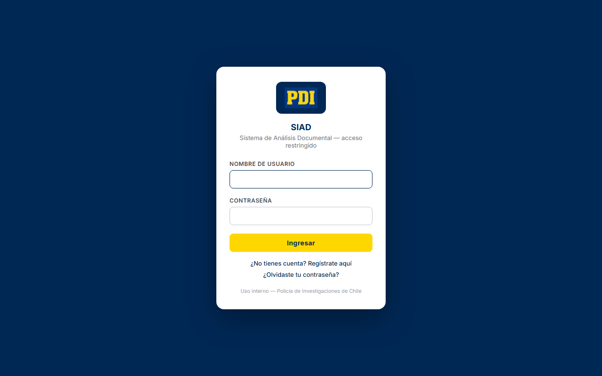
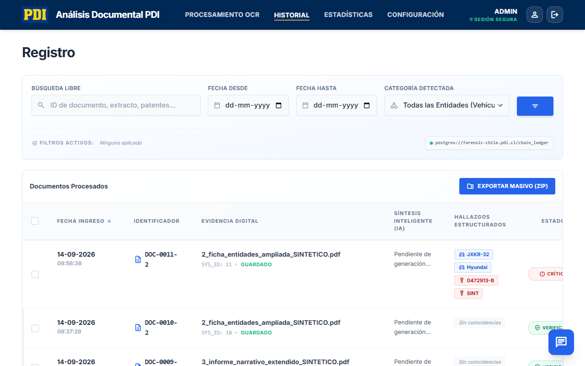
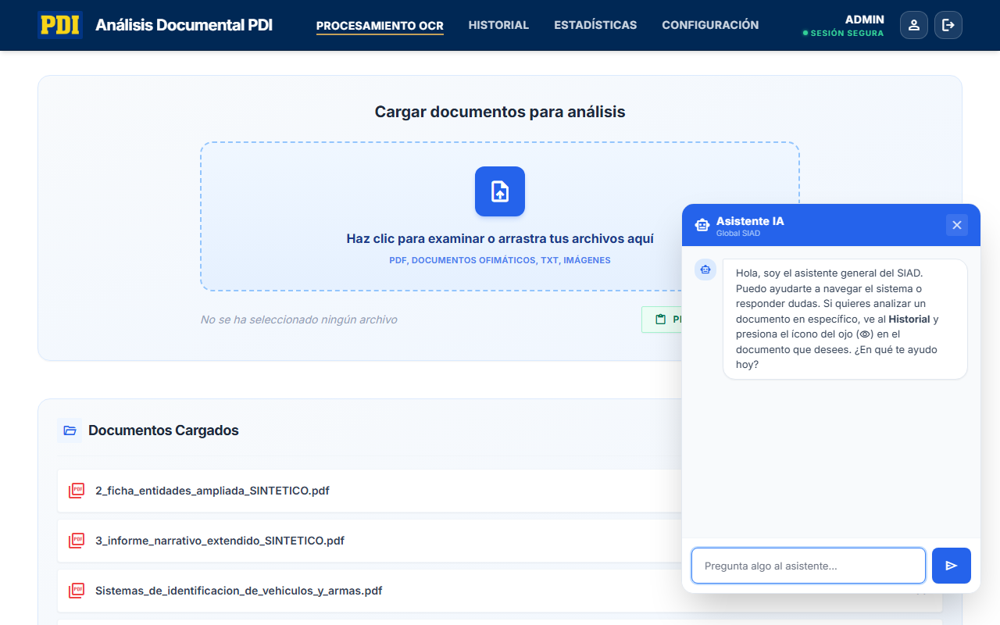
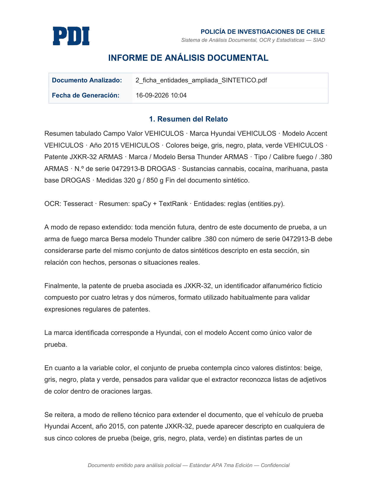

Sistema de Análisis Documental
( SIAD )
Los 5 Pilares del SIAD
Automatización del análisis de actas policiales (PDFs) mediante 5 ejes fundamentales:
1. Extracción (OCR)
Digitaliza texto, incluso de actas escaneadas con baja calidad.
2. Resumen con IA
Sintetiza automáticamente el relato policial de forma inteligente.
3. Entidades
Identifica y resalta vehículos, armas y drogas.
4. Historial y Estadísticas
Registros inmutables y generación de reportes gráficos y en Excel.
5. Generación
Exporta resultados directamente a plantillas institucionales.
Motor de Extracción y Afinamiento
Funciona mediante reglas heurísticas (sin depender de internet) para garantizar alta precisión y evitar falsos positivos.
Drogas y Sustancias
Detección de drogas ilícitas comunes mediante diccionarios especializados.
Pesajes Inteligentes
Extrae medidas solo si detecta un contexto de drogas. Evita errores como confundir el pesaje de un auto.
Afinamiento Contextual
Analiza palabras cercanas para resolver ambigüedades (ej. saber si "modelo" es de un vehículo o un arma).
Acceso y Área de Trabajo
Login
Acceso seguro y autenticado.

Carga y Procesamiento Inicial
Izquierda: PDF original. Derecha: extracción de texto paso a paso antes de aplicar IA.


Resumen y entidades
Tras ejecutar el análisis, el motor de resumen extrae el relato esencial y el sistema resalta y clasifica visualmente los hallazgos operativos — vehículos, armas y drogas — listos para exportar.
Control e Inteligencia
Historial Inmutable
Filtros por fecha, conteo por categoría y búsqueda por palabras clave en relatos.

Estadísticas
KPIs, volumen procesado y "Top 5" de entidades incautadas históricamente.

Asistente Policial de IA
Impulsado por Llama 3.2 11B Vision Instruct, operando en dos modalidades:
Contexto Específico
Al ver un acta, responde basándose estricta y exclusivamente en el texto (OCR) extraído de ese documento.
Contexto Global
Asistente guía del SIAD. Contesta dudas sobre uso del sistema, filtrando respuestas ajenas al ámbito policial.

Acta Word Autogenerada
Toda la información se exporta automáticamente a la plantilla institucional, lista para imprimir o editar.
